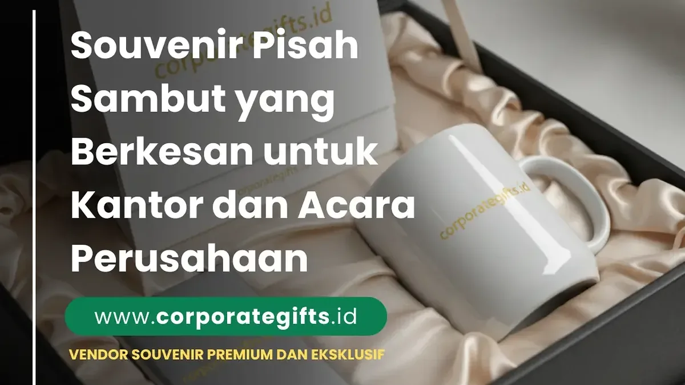

Corporate Gifts ID - Dalam dunia kerja yang dinamis, momen pisah sambut karyawan menjadi simbol penting dalam menjaga hubungan profesional yang hangat di lingkungan perusahaan. Souvenir pisah sambut adalah hadiah simbolis yang diberikan perusahaan kepada karyawan yang mengundurkan diri (resign), berpindah posisi/mutasi cabang, memasuki masa purnatugas (pensiun), atau disambut hangat sebagai anggota tim baru.
Pemilihan souvenir yang tepat, mulai dari tumbler stainless kustom, cangkir mug eksklusif, plakat kristal penghargaan, hingga leather card holder, mampu memperkuat citra perusahaan sekaligus meninggalkan kesan emosional yang mendalam di momen transisi karier tersebut.
Makna Penting Souvenir Pisah Sambut di Lingkungan Korporat
Pemberian cinderamata perpisahan bukan sekadar formalitas protokoler kantor, melainkan cerminan budaya organisasi yang menghargai setiap individu dan kontribusi nyata yang telah diberikan.
Melalui cinderamata yang dirancang dengan ketulusan, institusi dapat memelihara jejaring alumni karyawan (alumni network) yang positif, membangun reputasi employer branding yang kuat, serta menanamkan rasa bangga bagi rekan kerja yang melanjutkan langkah kariernya ke babak berikutnya.
Rekomendasi Souvenir Fungsional yang Selalu Diminati
Cinderamata yang mengedepankan aspek fungsionalitas selalu menjadi pilihan aman karena dapat langsung digunakan dalam rutinitas kerja harian di tempat baru:
1. Tumbler Stainless Kustom dengan Nama & Logo
Tumbler insulasi vakum double-wall berbahan SUS 304 adalah pilihan terfavorit untuk perpisahan rekan kerja. Produk ini menjaga suhu kopi panas atau air dingin hingga 12 jam, sekaligus menjadi pengingat harian akan kebersamaan tim yang solid.
2. Pouch Multifungsi & Organizer Kerja
Pouch serbaguna bahan kulit sintetis atau kanvas premium sangat berguna untuk menyimpan kabel charger, earphone, dan perlengkapan kerja portabel saat mobilitas kerja harian.
3. Cangkir Keramik atau Mug Kustom
Cangkir mug dengan sentuhan desain personal, seperti nama rekan kerja atau kutipan motivasi perpisahan, selalu menghadirkan kehangatan dalam setiap jeda minum kopi di meja kerja baru.
4. Notebook Hardcover & Jurnal Agenda
Buku catatan agenda bersampul PU leather dengan teknik blind deboss logo sangat pas untuk mendokumentasikan target kerja dan ide inovatif di tempat berkarya yang baru.

Paket gift set perpisahan kantor dalam hardbox mewah berbalut kain satin lembut.
Souvenir Personal dan Penuh Nilai Kenangan
Jika Anda ingin menitikberatkan pada kedekatan hubungan personal antartim, pilihlah barang dengan sentuhan sentimental:
- Plakat Kenang-Kenangan: Plakat kayu ukir atau akrilik bening dengan ukiran nama, jabatan, masa pengabdian, dan pesan terima kasih tulus dari dewan direksi.
- Bingkai Foto Kenangan Tim: Kolase dokumentasi foto momen seru proyek bersama rekan kerja yang dibingkai kayu minimalis elegan.
- Tanaman Hias Meja: Tanaman sukulen mini di dalam pot keramik custom melambangkan doa agar karier dan relasi pertemanan terus bertumbuh subur.
Souvenir Premium untuk Jajaran Pimpinan dan Manajemen
Untuk acara pisah sambut jajaran direksi, kepala divisi, atau pimpinan instansi yang mutasi dinas, persembahan cinderamata harus mencerminkan penghormatan atas kepemimpinan beliau:
- Executive Pen Set: Pena logam berbalut ukiran laser nama lengkap di dalam kotak beludru magnetik eksklusif.
- Desk Organizer Kulit Mewah: Tempat alat tulis, wadah memo, dan card holder terpadu bermaterial kulit asli untuk menghiasi meja kerja pimpinan baru.
- Paket Cinderamata Edisi Terbatas: Hampers korporat eksklusif berisi set aromaterapi artisan, tumbler grafir, dan aksesori meja bernomor seri khusus. Cek inspirasi selengkapnya di artikel 10 inspirasi souvenir pejabat eksklusif.
Matriks Pemilihan Hadiah Pisah Sambut
Berikut panduan praktis memetakan kategori penerima hadiah pisah sambut dengan rekomendasi produk dan kisaran spesifikasi yang tepat:
| Penerima Hadiah | Karakter Momen | Rekomendasi Cinderamata | Sentuhan Personalisasi |
|---|---|---|---|
| Rekan Kerja Selevel (Peer) | Hangat & Akrab | Tumbler custom nama, mug keramik, pouch organizer kanvas | Nama panggilan & kartu ucapan tim |
| Manajer / Kepala Unit | Resmi & Apresiatif | Leather notebook A5, pulpen metal grafir, desk mat kulit | Nama lengkap + gelar & logo divisi |
| Direksi / Pejabat Mutasi | Sangat Formal & Kenegaraan | Plakat kristal 3D, premium desk organizer set, gift set hardbox | Ukiran masa bakti & kutipan kepemimpinan |
| Karyawan Baru (Welcome Onboarding) | Ramah & Menyambut | Welcome kit onboarding (Lanyard ID card, blocknote, pulpen, tumbler) | Buku panduan budaya kerja & kartu selamat datang |
Tips Memilih Souvenir Pisah Sambut yang Tepat
Agar cinderamata yang Anda siapkan benar-benar menyentuh hati dan bernilai guna tinggi, perhatikan tiga prinsip kurasi berikut:
- Kenali Karakter Personal Penerima: Pilih hadiah yang selaras dengan hobi atau kebutuhan aktivitas barunya (misal: tumbler bagi yang gemar berolahraga atau organizer kulit bagi pekerja mobile).
- Jaga Standar Kualitas Material: Pastikan finishing grafir logo dan jahitan rapi, karena mutu barang merepresentasikan standar kehormatan perusahaan Anda.
- Sertakan Kartu Ucapan Tulis Tangan: Pesan hangat yang ditulis langsung oleh rekan satu divisi sering kali menjadi bagian paling berharga yang disimpan selamanya oleh penerima.
Pertanyaan Seputar Souvenir Pisah Sambut (FAQ)
Kesimpulan
Momen perpisahan maupun penyambutan pimpinan di kantor merupakan peristiwa emosional yang berharga. Souvenir pisah sambut yang dipilih secara cermat menjadi wujud nyata apresiasi atas dedikasi masa lalu sekaligus doa terbaik untuk kesuksesan di masa depan.
Konsultasikan kebutuhan cinderamata kantor, grafir nama personal, dan custom packaging bersama Corporate Gifts ID untuk menciptakan momen perpisahan yang tak terlupakan bagi rekan kerja Anda.
Disclaimer: Kustomisasi nama individu, jabatan, dan logo instansi dapat diaplikasikan pada seluruh varian produk souvenir perpisahan di fasilitas produksi CorporateGifts.ID dengan waktu pengerjaan kilat.